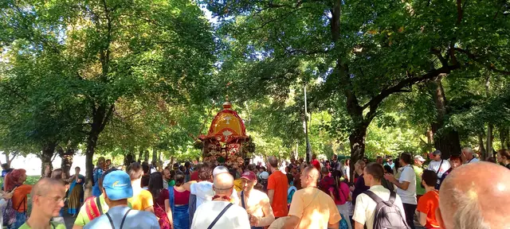
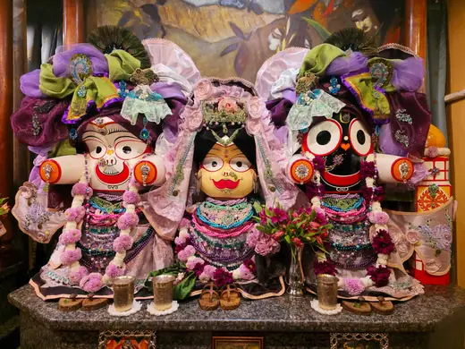
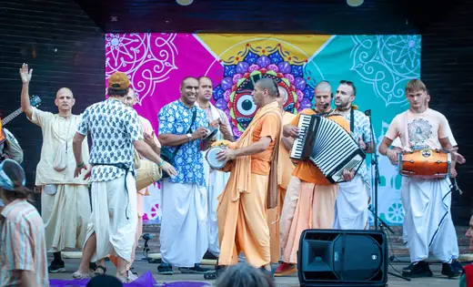
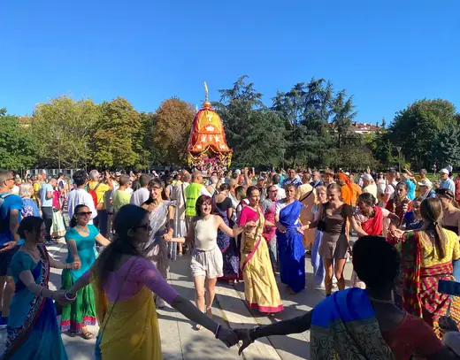
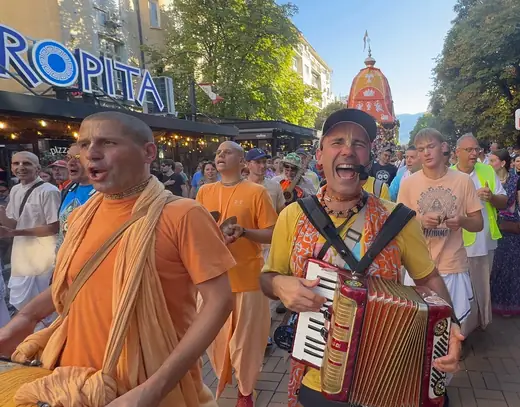

Добре дошли в Обществото за Кришна съзнание
Вероизповедание от традицията на Гаудия ваишнавизма: пътят на бхакти, любящата преданост към Бога, познат в Бхагавад-гита и Шримад Бхагаватам.
Обществото за Кришна съзнание е българското вероизповедание на Международното общество за Кришна съзнание (ИСКОН), духовно движение, основано през 1966 г. в Ню Йорк от Бхактиведанта Свами Прабхупада. То принадлежи към ваишнавизма, един от главните клонове на индийската духовна традиция, който почита единия Бог като върховна личност.
В България изповеданието присъства от 1991 г. и е регистрирано вероизповедание, самостоятелно юридическо лице. Нашата мисия е да съхраняваме и споделяме това древно знание: чрез програми, образование, благотворителност и издаване на класическата ведическа литература.
- ТрадицияГаудия ваишнавизъм
- ОснователБхактиведанта Свами Прабхупада (1896–1977)
- Основни текстовеБхагавад-гита, Шримад Бхагаватам
- Главна практикаВъзпяване на маха-мантрата Харе Кришна
- В Българиявероизповедание от 1991 г.
„Истинската религия означава да опознаем Бога и да Го обикнем, а средството за това в нашата епоха е възпяването на светите Му имена.“
Учение
Ученията на Кришна съзнание отговарят на най-дълбоките въпроси на човека: Кой съм аз? Какъв е смисълът на живота? Какво е Бог?
В сърцевината на нашето учение стои разграничението между материята и духа. Тялото е материално и преходно, но в него обитава вечна духовна същност, душата. Когато душата забрави връзката си с Бога, тя се отъждествява с тялото и търси щастие в материалния свят, преминавайки през повтарящи се раждания и смърти според закона на кармата. Духовният живот започва с пробуждането от това забравяне.
Кришна: Бог като личност
Абсолютната Истина като върховна личност, изпълнена с любов и красота.
Душата, кармата и прераждането
Кои сме всъщност и как действат законите, които управляват живота ни.
Бхакти йога и маха-мантрата
Пътят на любящата преданост и възпяването на светите имена.
Свещените текстове
Бхагавад-гита, Шримад Бхагаватам и ведическата мъдрост.
Начин на живот
Вегетарианство, прасадам и четирите принципа на чистия живот.

Практика
Програмите, музиката и празниците са сърцето на живота на общността, открити за всеки гост.
Киртанът, съвместно пеене с традиционни инструменти, е особено характерен и създава радостна, обединяваща атмосфера. Гостите са добре дошли да наблюдават или да участват.
Харе Кришна, Харе Кришна,
Кришна Кришна, Харе Харе
Харе Рама, Харе Рама,
Рама Рама, Харе Харе
Празничен календар
Джанмащами
Празникът на появата на Кришна, един от най-големите в годината.
Гаура Пурнима
Появата на Шри Чайтаня Махапрабху.
Ратха ятра
Празникът с колесница: шествие из града, открито за всички.

Ратха ятра и харинама


Ратха ятра в България
Ратха ятра се провежда в България от 1996 г. Колесницата е на Бог Джаганнатха, „храм на колела“. Шествието е „в съпровода на музика, възпяване на мантри и много танци“.
- Фестивал
- 31-ви Ратха ятра фестивал
- Дата
- 23 август 2026 (неделя)
- Място
- Лятната сцена в парк „Борисова градина“
- Програма
- от 11:00 до 21:30
- Шествие с колесницата
- от 15:00 до 18:30
Храмът в София
- Адрес
- гр. София, кв. „Малинова долина“, бул. „Климент Охридски“ 119
- Телефон
- 02 961 60 50
- Имейл
- info@krishnabg.com
- Работно време
- понеделник до петък и неделя: 7:30 до 9:00 и 18:00 до 18:30
събота: 7:30 до 9:00 и 15:30 до 20:00 - Всеки ден
- 8:00, клас по Шримад Бхагаватам
- Събота
- 15:30 до 19:30, празнична програма
Бургас
Данни за контакт: в процес на допълване.
Контакти и правен статут
Обществото за Кришна съзнание (ОКС) е регистрирано вероизповедание, самостоятелно юридическо лице по Закона за вероизповеданията. Присъства в България от 1991 г. За запитвания относно вярата, дейностите, медийни въпроси или сътрудничество пишете на info@krishnabg.com или се обадете на 02 961 60 50.
- Наименование
- „Общество за Кришна съзнание“ (ОКС)
- Статут
- Регистрирано вероизповедание, самостоятелно юридическо лице (чл. 14–15 от Закона за вероизповеданията)
- Съдебна регистрация
- Софийски градски съд, ф.д. № 1663/2003 г. (парт. № 7, том 1, стр. 60)
- ЕИК (единен идентификационен код) / БУЛСТАТ
- 000681328
- Управление
- Общо събрание · Национален съвет · Председател на Националния съвет
- Седалище и адрес
- гр. София, кв. „Малинова долина“, бул. „Климент Охридски“ 119
- Уебсайт
- krishnabg.com
- Имейл
- info@krishnabg.com